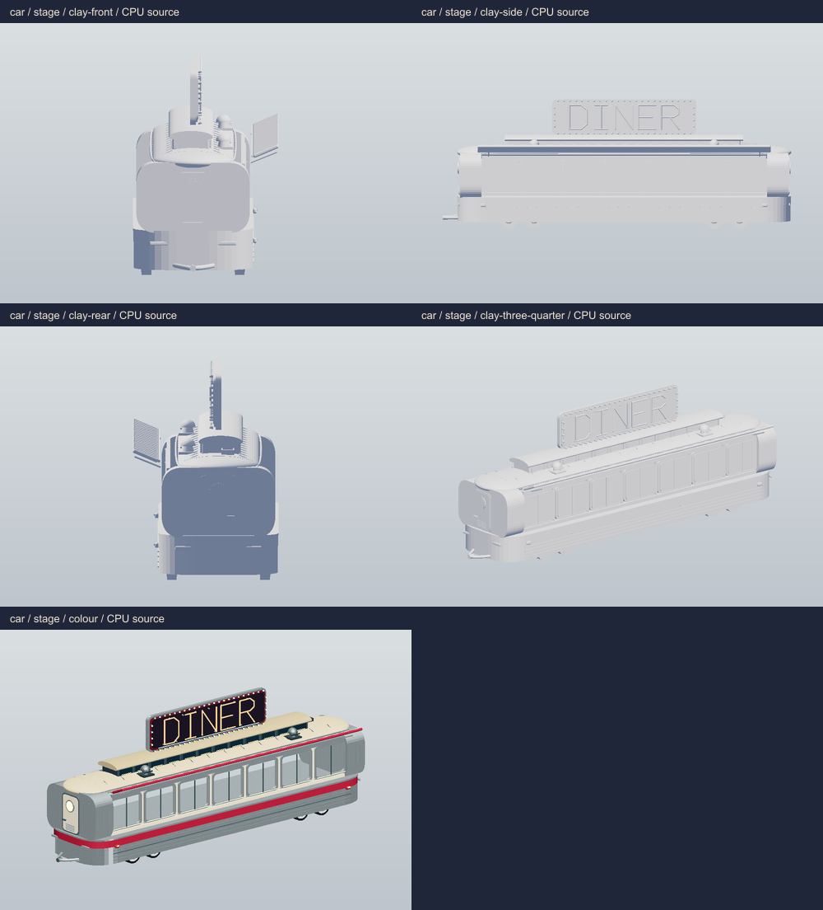
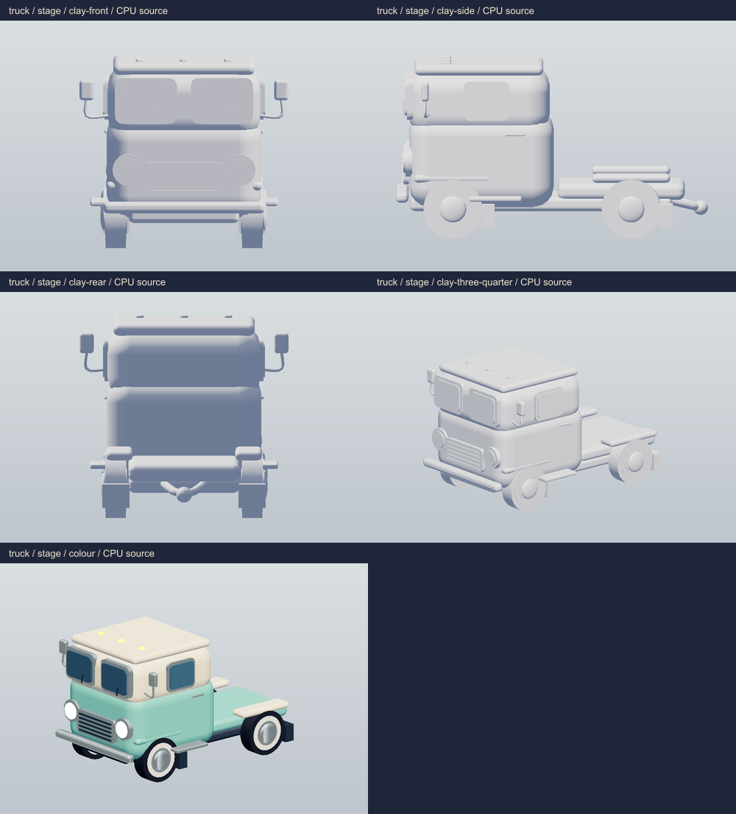
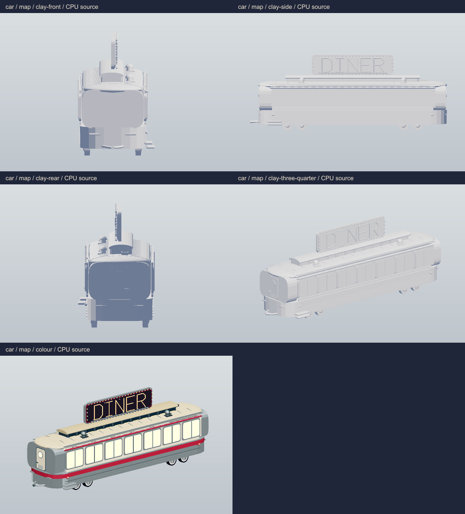
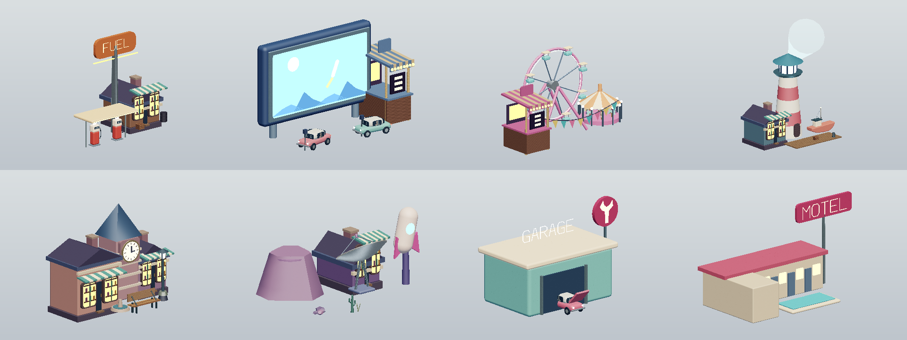

Diner car and six places — round 2
9 October 2026. CPU source renders of the live TypeScript geometry. These approximate materials and omit WebGL reflections, bloom, shadows and normal maps. The supplied WebGL baseline is linked below; Claude will capture the next runtime review with the night lighting.
Review notes and API · Raw geometry measurements · Claude’s round 2 feedback
Supplied WebGL baseline
These are Claude’s actual night renders before this revision. They establish the rejected empty surroundings and plain roof; the new CPU views cannot establish final night exposure or bloom.
Truck stop · previous WebGL night viewDrive-in · previous WebGL night viewFairground · previous WebGL night viewHarbour · previous WebGL night viewOld Town · previous WebGL night viewMoon Mile · previous WebGL night view
The shift stage
Car and truck, clay and colour

car / stage detail / four clay angles and colour
truck / stage detail / four clay angles and colour
car / map detail / four clay angles and colourtruck / map detail / four clay angles and colourCoupled rig
The truck’s rear attachment and the diner’s A-frame coupler meet at the same world point. The rig remains straight, nose out, with tyres on the ground. It is secondary scenery and crops at the left edge on portrait phones.
Map landmark vignettes

Truck stop, Drive-in, Fairground, Harbour, Old Town, Moon Mile, Garage and Motel
Living motion
Source samples at 0 / 2.5 / 5 / 7.5 seconds. Walking, vehicle motion, rides, flags, water, signs and the entrance gate are time-driven. Full cycles and occupied gameplay still need WebGL review.
Measured geometry budget
Conservative totals: main pass plus one complete shadow pass, all five booths, plain car. These are analytical source counts, not renderer.info measurements. High limits: 140 calls / 450,000 triangles. Low limits: 70 calls / 180,000 triangles.
| Place | High calls | High triangles | Low calls | Low triangles |
|---|
| Truck stop | 42 | 251,838 | 42 | 133,898 |
|---|
| Drive-in | 40 | 321,966 | 40 | 172,402 |
|---|
| Fairground | 60 | 298,724 | 60 | 156,232 |
|---|
| Harbour | 66 | 284,022 | 66 | 154,914 |
|---|
| Old Town | 40 | 270,108 | 40 | 138,624 |
|---|
| Moon Mile | 53 | 252,946 | 53 | 134,826 |
|---|
Every stage uses three point lights without shadows. Maximum procedural texture: 256 × 256. See notes for all-upgrade counts and validation.